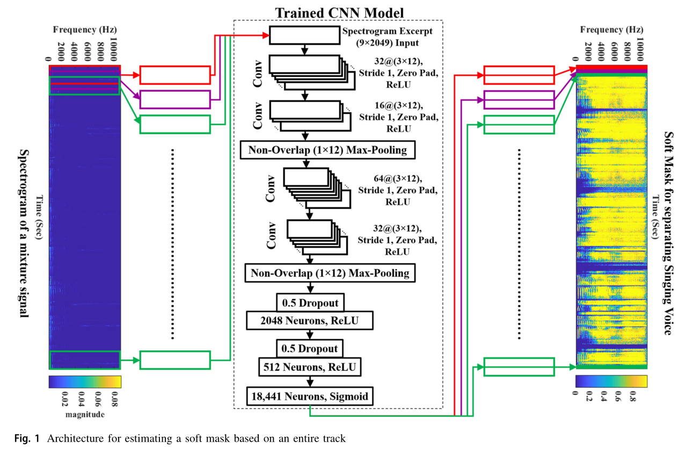
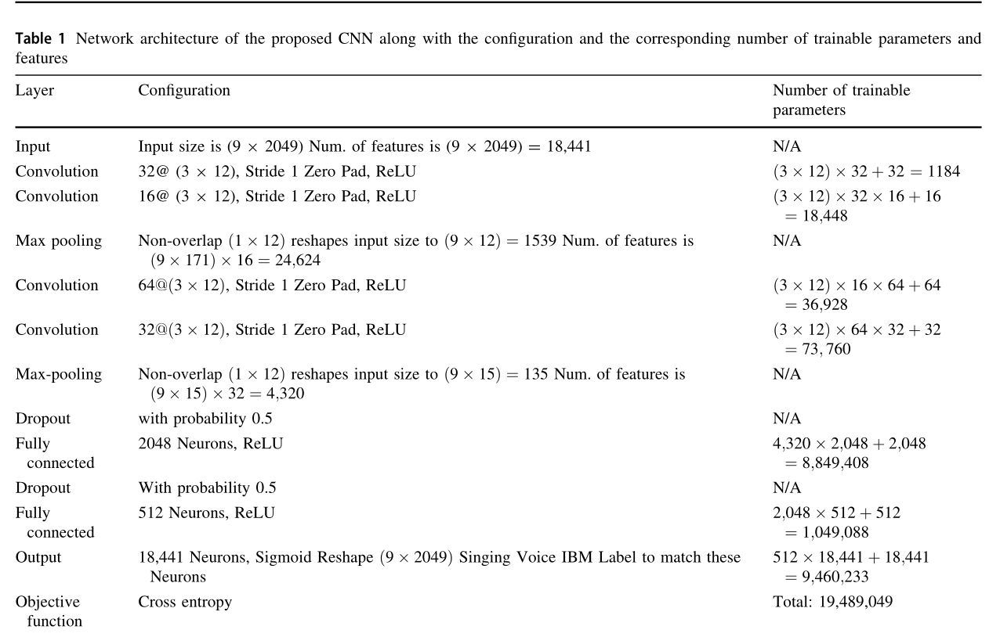

摘要：
1.本文依pixel-wise 图像分类技术启发提出了一个新的神经网络结构来实现音乐背景伴奏分离人声的任务，使用了交叉熵损失函数和预训练神经网络结合来作为自编码器(Autoencoder);
2.像素级分类技术直接用来评估频谱图中每个T-F块所对应的声源信号的标签，所提的网络是通过理想二值掩膜(IBM)作为训练输出的标签；
3.该论文把分离任务视为一个像素级的图片分类任务，并消除了一个被广泛使用但不好理解的步骤：维纳滤波后处理；
想法：
1.以前只听过维纳滤波器来处理信号噪声，没想到ML这里也提到了它，还不知道引进它的作用是啥，以后得找文章读读；
2.其实不是很理解自编码器的概念，为什么该部分操作要这么取名字，找到了一篇相关介绍的博文，内容也很有限，不过可以作为参考自编码器，另外顺便贴一下关于掩蔽效应的博文。掩蔽
网络结构
该论文提出的额结构如下图(选自原论文)


训练过程：
1.预处理阶段:此阶段用来生成神经网路的输入数据，首先通过一个短时傅里叶变化(STFT)分别获得输入混合音频的幅度谱和相位谱(STFT的具体参数设置见论文)，根据作者之前关于Sinusoidal partials tracking(PT)的研究，歌唱的人声平均长度在9个连续帧并且4倍0填充时进行分离任务最理想，故假设这样的数据能够被CNN网络充分训练。
2.训练阶段：此阶段以上一阶段的输出作为训练输入，作者是根据他人人声识别的网络改的，原网络论文链接。在上一步作者生成了混合信号完整的语谱图，并逐一分9帧作为神经网络的输入进行训练。这里使用IBM作为网络的训练标签，而网络的训练输出是该输入数据属于人声还是属于背景声的概率值，因此可以在这里使用交叉熵作为训练loss，IBM是一个二值掩码，取值为0和1。
3.输出阶段:此阶段利用训练的输出9帧T-Fbin图像中间的一帧数据逐一拼接成soft mask语谱图，然后对这个图进行了逆STFT运算变换为人声
个人想法
目前打算将这片论文的实验仿真下来，然后参照他的模式设计自己的分离网络。